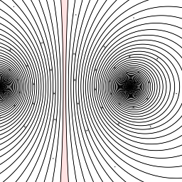
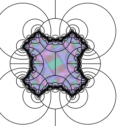
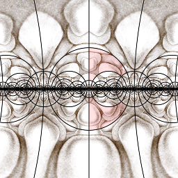
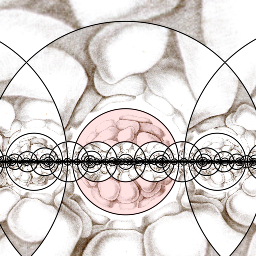
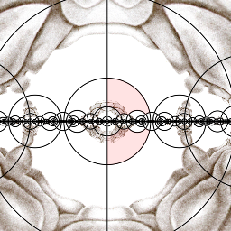

Groups imported from the Orb repository (2026-10-26): inversive groups with bends and twists. Many of their old examples relied on the Dirichlet domain builder, which is not in SymmHub yet, so some presets show little or nothing.




